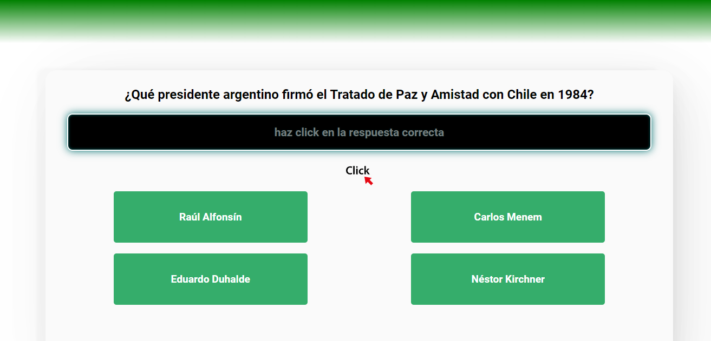

Questions
Juego tipo preguntados de historia Argentina desarrollado con HTML,CSS y javascript vanilla
Ver proyecto 👁Mi trayectoria profesional se caracteriza por la confluencia de dos grandes pasiones: la docencia y la tecnología. Esta sinergia me ha impulsado a explorar diversos ámbitos dentro del mundo tecnológico, desde la reparación de equipos electrónicos y redes hasta la programación. Mi formación como docente me ha permitido desarrollar habilidades clave para la transmisión de conocimientos y la gestión de grupos de trabajo. Además, mi experiencia en la reparación de PC, notebooks, netbooks y redes me ha brindado una sólida base técnica en el ámbito de la informática. En mi constante búsqueda de crecimiento profesional, me he adentrado en el apasionante mundo de la programación. He completado con éxito la formacion de Full Stack Developer Jr. adquiriendo las habilidades necesarias para desarrollar soluciones web dinámicas y escalables. En la actualidad siguiendo con mi formacion continua en programacion he iniciado la Técnicatura Superior en Desarrollo Web y Aplicaciones Digitales.
Juego tipo preguntados de historia Argentina desarrollado con HTML,CSS y javascript vanilla
Ver proyecto 👁Lista de tareas desarrollada con HTML,CSS y javascript vanilla. Usa el localstorage para almacenar las tareas
Ver proyecto 👁Juego tradicional del ahorcado desarrollado con HTML,CSS y javascript vanilla
Ver proyecto 👁APP WEB para calcular propinas desarrollada con HTML,CSS y javascript vanilla
Ver proyecto 👁One Oracle, Alura primer desafío:codificador de mensajes desarrollado con HTML,CSS y javascript vanilla
Ver proyecto 👁Carrito de compras de productos de electronica desarrollado con HTML,CSS y javascript vanilla
Ver proyecto 👁